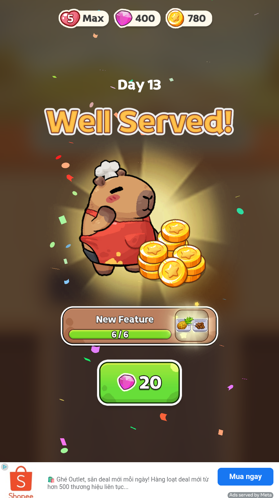
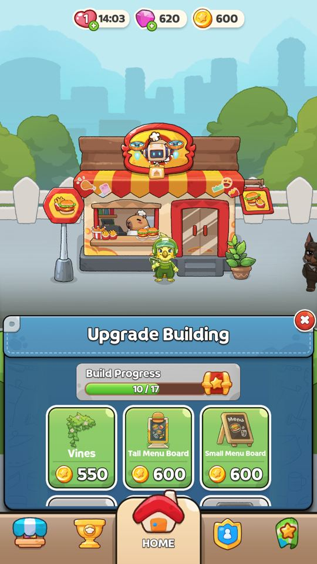
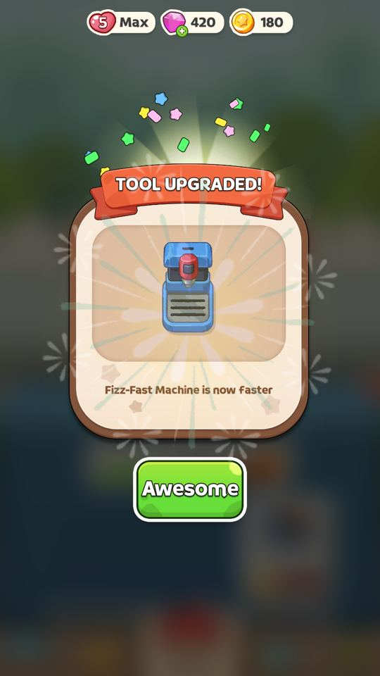
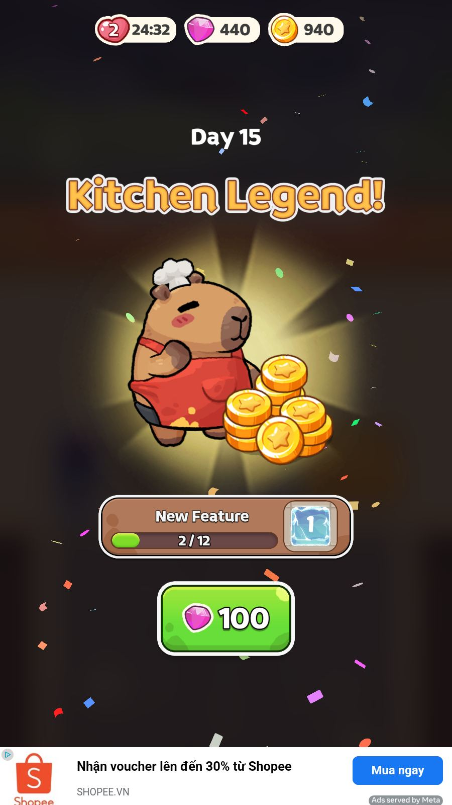
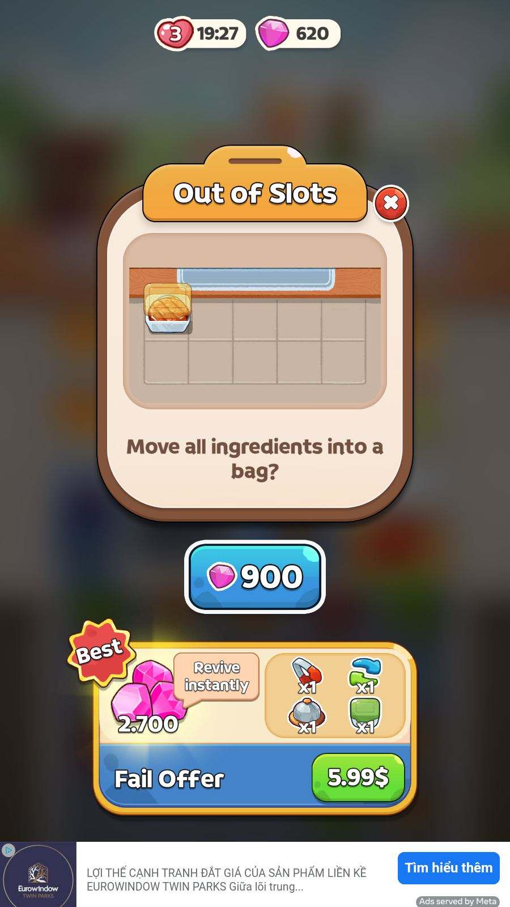
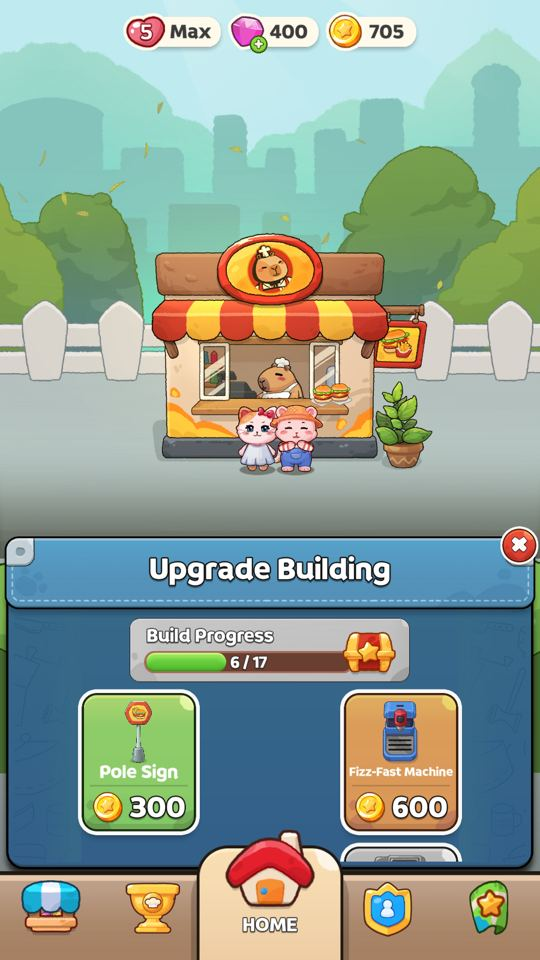

Kinh tế: coin trả đúng từng nhà hàng, gem chảy vào chậm và ra theo lần thua
Coin và gem vào từ đâu, ra ở đâu, bao nhiêu Day thì mua xong một nhà hàng, và một lần thua đáng giá bao nhiêu Day thưởng?
Bài tính sổ nguồn và đích của 4 tài nguyên chính: coin, gem, tim và booster (kèm quỹ tăng tốc). Mọi phép tính đều ghi công thức và đầu vào; con số ✅ lấy từ dữ liệu level, config APK hoặc playtest 16/11. Đọc khoảng 12 phút; đọc kèm bài Thiết kế level (độ khó quyết định thu nhập) và bài sale-event-deep (phần bán gem).
- ✅ Giá trị thật: lấy thẳng từ code, config server thật, save hoặc ảnh chụp khi chơi.
- 🧪 Ví dụ minh họa: con số đầu vào giả định để thấy cơ chế chạy; cách tính trong ví dụ là cách tính thật trong code.
- Tên kỹ thuật (class, method, key) để trong ngoặc hoặc ở dòng bằng chứng, để tra code khi cần.
Tóm tắt nhanh
- Coin mỗi Day = tổng giá nguyên liệu của mọi món trong level. Khách vui trả 100 %, bình thường và cáu trả 50 %, bỏ đi trả 0 %. Thua thì mất coin đang kiếm dở.Ví dụ ✅ Tính từ dữ liệu burger Day 13–19: 375, 245, 515, 340, 385, 445, 190 coin. Playtest 16/11 nhận đúng 7 / 7 con số này. Day 15 thua 4 lần, coin vẫn đứng ở 425.
- 30 Day bắt buộc trả đúng tiền lên mốc nhà hàng. Ở cả 11 map, coin của 30 Day đầu bằng 98–107 % giá các món tới mốc.Ví dụ ✅ Burger: 30 Day đầu trả 11 155 coin, mốc Giant Burger cần 11 150 coin (dư 5 coin). Game còn bù coin ở Day 30 map đầu để chắc chắn chạm mốc (+150 dư).
- Mua hết một nhà hàng cần gần trọn 100 Day của map đó. Phần sau mốc được trả bằng 70 Day phụ (thưởng ×0,5), mà Day phụ lại khoá theo map đi trước 2–5 bước.Ví dụ ✅ Burger: 27 200 coin = 30 Day thường + 70 Day phụ (11 155 + 32 255 × 0,5 = 27 283). Extra Day đầu tiên của burger chỉ mở khi qua Day 90 (sushi).
- Gem vào chậm, đều, gắn với độ khó. 30 Day bắt buộc của một map cho 920–1 080 gem; trung bình 34,8 gem mỗi Day.Ví dụ ✅ 11 map × 30 Day: 920 + 2 × 960 + 8 × 1 080 = 11 480 gem / 330 Day. Gem tặng đầu game 900 = 26 Day thưởng.
- Gem ra theo lần thua. Save-Me 900 / 1 800 / 2 400 gem, đầy tim 800, booster 500–700, tăng tốc 1 200: mỗi khoản bằng 14–69 Day thưởng gem.Ví dụ ✅ Day 15 burger: người chơi có 440 gem, popup Save-Me đòi 900 gem và gợi ý Fail Offer 5,99 $ (2 700 gem + 4 booster). Không đủ gem nên thua và mất tim.
- Quảng cáo là vòi gem lớn nhất cho người không nạp. Thang Daily Rewards cho 450 gem mỗi ngày nếu xem 4 quảng cáo, bằng 13 Day thưởng gem.Ví dụ ✅ Daily Rewards: hàng miễn phí 50 gem (ngày chẵn) hoặc 15 phút tim vô hạn (ngày lẻ); 4 hàng quảng cáo 100 / 150 gem / 15 phút tim / 200 gem.
Ví dụ xuyên suốt: sổ cái 95 phút chơi thật ngày 16/11 (Day 13 → Day 20)
✅ Tài khoản test (hồ sơ tạo 25/10/2026), bản 1.15, MuMu. Đầu phiên: Day 13, 5 tim, 350 gem, 705 coin, Build Progress burger 6/17. Không nạp, không tiêu gem, không bấm quảng cáo tự nguyện (trừ nút gem 100 ở Day 15 có quảng cáo thưởng).
| Lúc | Người chơi làm gì | Game phản hồi | Gem / coin / tim sau đó |
|---|---|---|---|
| Đầu phiên | Mở Daily Rewards, nhận hàng miễn phí | +50 gem, hàng chuyển sang đếm ngược 11h15m | 400 gem / 705 coin / 5 tim |
| Home | Mua Pole Sign | −300 coin, Build 7/17 | 400 / 405 / 5 |
| Day 13 (Normal, 10 khách) | Thắng | +375 coin (tổng giá món), nút claim +20 gem | 420 / 780 / 5 |
| Home | Mua Fizz-Fast Machine (dụng cụ) | −600 coin, “TOOL UPGRADED!”, Build 8/17 | 420 / 180 / 5 |
| Day 14 (Normal, 8 khách) | Thắng | +245 coin, +20 gem | 440 / 425 / 5 |
| Day 15 (Super Hard) × 4 | Thua 3 lần vì đầy lưới, 1 lần tưởng kẹt (còn nước đi) nên Leave | Mỗi lần thua hiện Save-Me 900 gem + Fail Offer 5,99 $; coin kiếm dở bị mất | 440 / 425 / 1 |
| Day 15 lần 5 | Thắng nhờ Magnet; bấm nút 100 gem | +515 coin; nút 100 gem chạy quảng cáo thưởng rồi cộng gem; sau đó popup Remove Ads 8,99 $ | 540 / 940 / 2 (tim hồi theo giờ) |
| Home | Mua Crispy Fryer | −700 coin, Build 9/17 | 540 / 240 / 2 |
| Day 16–19 (Normal) | Thắng 4 Day liên tiếp | +340, +385, +445, +190 coin; +20 gem mỗi Day; quảng cáo xen kẽ sau mỗi lần claim | 620 / 1 600 / 3 |
| Day 20 (Hard) | Thua 1 lần, lần 2 thoát giữa chừng | Save-Me 900 gem lần nữa; Leave mất 1 tim | 620 / 1 600 / 1 |
| Cuối phiên | Mua Bigger House (base nhóm 2) | −1 000 coin, nhà to lên, Build 10/17 | 620 / 600 / 1 |
Gem: 350 + 50 + 6 × 20 + 100 = 620 (không tiêu đồng nào). Coin: 705 + 2 495 kiếm được − 2 600 tiêu = 600. 7 Day thắng cho 2 495 coin (356 coin / Day) và 220 gem; 5 lần thua tốn 0 coin, 0 gem nhưng 4 tim và 3 lần thấy popup bán hàng. Kết thúc phiên người chơi vẫn không đủ 900 gem cho một lần Save-Me.






Ảnh chụp minh họa (6)
Ảnh chụp từ game thật. Bấm ảnh để phóng to, phím ← → để chuyển ảnh.





Luồng hoạt động (6 bước)
Tóm lại: thắng Day → coin = tổng giá món, gem = 20 / 60 / 100 → coin mua nâng cấp nhà hàng tới mốc → thua Day → popup Save-Me 900 gem / Fail Offer / mất tim → thiếu gem thì shop, quảng cáo hoặc chờ
- 1Phục vụ kháchClientMỗi khách trả tổng giá nguyên liệu trong các món của họ, nhân phần trăm theo cảm xúc (100 / 50 / 50 / 0). 97,9 % khách không có đồng hồ nên trả đủ (suy luận theo mô tả 1.11).Ví dụ ✅ Khách đầu Day 13: bánh 10 + trứng 5 + hành 5 + rau 5 = 25 coin; HUD tăng 0 → 25.
OrderPricingCalculator.CalculatePrice; RestaurantParams.emotionToPricePercentage - 2Thắng DayClientCoin của màn được giữ; gem 20 / 60 / 100 theo độ khó; Day phụ nhân 0,5 cả coin lẫn gem. Thua thì coin của màn mất.Ví dụ ✅ Day 15 thắng ở lần 5: +515 coin, +100 gem. Bốn lần thua trước: coin đứng yên 425.
GameProgressScenario.GetWinRewardMultipliers
Thắng Day - 3Tiêu coin ở nhà hàngPlayerCoin chỉ có một chỗ tiêu đang chạy: món nâng cấp nhà hàng (trang trí, dụng cụ nhanh hơn, nhà to hơn). Không có gói IAP bán coin.Ví dụ ✅ Burger 32 món, từ 300 (Pole Sign) tới 1 800 coin (Giant Burger, mốc).
MapUpgradeConfig._itemConfigs
Tiêu coin ở nhà hàng - 4Lên mốc nhà hàngClientMua base cuối (mốc) → 100 gem + booster; mua hết mọi món → thêm 2 booster. Map 1 được bù coin ở Day 30 nếu thiếu.Ví dụ ✅ Burger: mốc 11 150 coin; thưởng 100 gem + Ingredient Pick (prefab), bù coin dư 150.
BuildingUpgradeRewardRemoteConfig; HomeControllerCookOrder.TryTopUpCoinForFirstMapMilestone - 5Thua DayClientHết chỗ / khách hết giờ / băng kẹt → popup Save-Me giá 900, rồi 1 800, rồi 2 400 gem trong cùng level; kèm Fail Offer 5,99 $. Từ chối thì mất 1 tim.Ví dụ ✅ Day 20 Hard: “Out of Slots”, 900 gem; người chơi có 620 gem.
LevelSaveMeControl.ShowSaveMe; booster_pack_config.saveMePrices
Thua Day - 6Bù gem hoặc timPlayerGem: shop (1 000 gem = 1,99 $ trở lên), gói Starter / Fail Offer, thang quảng cáo Daily Rewards. Tim: chờ 30 phút / tim, xem quảng cáo +1, hoặc 800 gem đầy tim.Ví dụ ✅ More Lives: “+1 heart FREE” (quảng cáo) hoặc “Full 800 gems”.
UIPopupHeartRefill; iap_shop_configBù gem hoặc tim


Nhánh & ngoại lệ
| Khi | Thì | Ví dụ | Bằng chứng |
|---|---|---|---|
| Khi khách có đồng hồ bắt đầu cáu | Khách chỉ trả 50 % giá (Normal hoặc Angry), bỏ đi thì 0 %. | 🧪 Giả sử boss gọi 3 burger giá 30 coin mỗi cái và được phục vụ khi đã trôi 60 % thời gian chờ → trả 90 × 50 % = 45 coin thay vì 90. | FTimer.timePercentToEmotion [0, 10, 50, 100] |
| Khi thắng Day phụ (31–100) | Coin và gem nhân 0,5. | ✅ Day Super Hard ở level phụ trả 50 gem thay vì 100. | extra_level_config.gemMul / goldMul = 0.5 |
| Khi cứu nhiều lần trong cùng level | Giá tăng 900 → 1 800 → 2 400 gem; sang level mới về lại 900. | 🧪 Người chơi có 3 000 gem cứu 2 lần trong Day 30: còn 3 000 − 900 − 1 800 = 300 gem. | BoosterAndSaveMeRemoteConfig.GetSaveMePrice |
| Khi studio đổi giá món | Bản cập nhật có popup hoàn coin cho các Day đã thắng. | ✅ Code có 3 thông báo: 1.3 UpgradeRebalance, 1.6 LevelCoinRefund, 1.13 DishPriceRefund (tteokbokki: “dish prices were adjusted”). | NewVersionNoticeService; DishPriceRefundNotice.BuildAsync |
Bản đồ nguồn và đích
Tóm lại: coin: Day thắng → nâng cấp nhà hàng; gem: Day thắng + quảng cáo + IAP → Save-Me, tim, booster, tăng tốc
| Tài nguyên | Dòng | Số lượng | Ví dụ | Số liệu do |
|---|---|---|---|---|
| Coin vào | Thắng Day (tổng giá món) | 105–1 130 coin / Day (APK) | ✅ Burger Day 1: 105; sushi L4: 1 130 | Client (dữ liệu level) |
| Coin vào | Bù coin Day 30 map đầu | đủ tới mốc + 150 | ✅ Chỉ map 1, một lần | Client |
| Coin vào | Hoàn coin sau đổi giá | theo Day đã thắng | ✅ 1.13: tteokbokki | Client (công thức chưa đọc) |
| Coin ra | Nâng cấp nhà hàng | 27 200 – 39 500 / map; 372 950 cả 11 map | ✅ Burger 32 món, pizza 39 500 | Client (APK) |
| Gem vào | Tặng đầu game | 900 một lần | initHardRw | Client (APK) |
| Gem vào | Thắng Day | 20 / 60 / 100 (phụ ×0,5) | ✅ Playtest +20 và +100 | Client (APK) |
| Gem vào | Daily Rewards | 50 gem ngày chẵn miễn phí; 100 + 150 + 200 bằng quảng cáo | ✅ Day 13 nhận 50 | Client (prefab) |
| Gem vào | Daily Gift 7 ngày | 50 + 100 + 150 gem và 6 booster, một vòng | ✅ Ngày 2 nhận Magnet ×1 | Client (prefab) |
| Gem vào | Mốc nhà hàng | 100 gem + booster / map | – | Client (prefab / RC) |
| Gem vào | Sự kiện (Tower, Streak, Pass, Weekly…) | Tower 1 850 gem cả tháp; Streak bước cuối 5 000; Weekly top 1 có 100 gem | Mở từ Day 10–61 | Client (asset) |
| Gem vào | IAP | 1 000 gem = 1,99 $ … 100 000 = 99,99 $ | ✅ Ảnh shop 16/11 | Client (iap_shop_config) |
| Gem ra | Save-Me | 900 / 1 800 / 2 400 theo lần trong level | ✅ 900 thấy 4 lần | Client (APK, live không ghi đè) |
| Gem ra | Đầy tim | 800 | ✅ “Full 800 gems” | Client (APK) |
| Gem ra | Booster lẻ / gói ×3 | 500–700 / 1 600–1 800 | Swap 500, Stack Box 700 | Client (APK) |
| Gem ra | Tăng tốc 2x | 1 200 gem = 20 phút | Quỹ miễn phí 5 phút | Client (APK) |
| Gem ra | Tạo / sửa đội | 100 (mở) / 1 000 (đóng) / 100 | Từ Day 25 | Client (code) |
Coin: công thức giá món khớp 7 / 7 Day đã chơi
Tóm lại: coin của Day = Σ giá nguyên liệu lá của mọi món × % cảm xúc
Giá nằm ở từng nguyên liệu trong graph của map (ví dụ burger: bánh cắt 10, thịt chín 5, hành 5, ly soda 10, khoai chiên 5, đá 0, sốt phô mai 0). Món không có giá riêng; giá món là tổng giá nguyên liệu bên trong.
Cộng giá cho toàn bộ món của một level ra đúng số coin người chơi nhận khi thắng mà mọi khách đều vui.
| Day (burger) | Khách | Tính từ dữ liệu | Nhận khi chơi 16/11 | Ví dụ | Số liệu do |
|---|---|---|---|---|---|
| 13 | 10 | 375 | 375 (405 → 780) | Khách đầu 25 coin | Client / Đo trên máy |
| 14 | 8 | 245 | 245 (180 → 425) | Cola đá: ly 10 + đá 0 | Client / Đo trên máy |
| 15 (Super Hard) | 12 | 515 | 515 (425 → 940) | 28 món | Client / Đo trên máy |
| 16 | 11 | 340 | 340 (240 → 580) | – | Client / Đo trên máy |
| 17 | 14 | 385 | 385 (580 → 965) | – | Client / Đo trên máy |
| 18 | 14 | 445 | 445 (965 → 1 410) | – | Client / Đo trên máy |
| 19 | 12 | 190 | 190 (1 410 → 1 600) | Chỉ gà rán + soda, giá thấp: 15 coin / khách | Client / Đo trên máy |
| 20 (Hard) | 15 | 685 | (chưa thắng) | – | Client |
Coin theo map: 30 Day bắt buộc trả đúng tiền lên mốc
Tóm lại: coin 30 Day đầu ≈ giá tới mốc; coin 70 Day phụ × 0,5 ≈ phần còn lại
- Không có coin dư để tiêu chỗ khác. Map k+1 chỉ nâng cấp được khi map k đã lên mốc, và coin của map k+1 vừa đủ cho mốc của nó.Ví dụ ✅ Coffee 30 Day trả 14 345, mốc coffee cần 14 200: chỉ dư 145 coin cho đuôi nâng cấp burger.
- Ai làm khách cáu sẽ hụt mốc. Chỉ map đầu có bù coin; từ map 2, người chơi để khách trả 50 % sẽ phải chờ tới Day phụ mới đủ tiền.Ví dụ 🧪 Giả sử 5 % khách của 30 Day sandwich chỉ trả 50 %: coin còn 15 270 × (1 − 0,025) ≈ 14 888, thiếu 762 coin tới mốc 15 650.


| Map | Coin Day 1–30 | Coin tới mốc | Tỉ lệ | Coin Day 31–100 × 0,5 | Tổng giá nâng cấp | Ví dụ | Số liệu do |
|---|---|---|---|---|---|---|---|
| burger | 11 155 | 11 150 | 100 % | 16 128 | 27 200 | 30 Day + 70 Day phụ = 27 283 | Client (tính từ dữ liệu) |
| coffee | 14 345 | 14 200 | 101 % | 22 370 | 36 600 | – | Client |
| sushi | 15 145 | 15 000 | 101 % | 17 590 | 31 450 | L4 trả 1 130 coin | Client |
| pasta | 15 270 | 15 250 | 100 % | 16 445 | 31 650 | – | Client |
| icecream | 16 355 | 15 300 | 107 % | 19 280 | 33 200 | Dư nhiều nhất: 1 055 coin | Client |
| sandwich | 15 270 | 15 650 | 98 % | 19 875 | 35 450 | Thiếu 380 coin ở Day 180 | Client |
| tteokbokki | 16 190 | 16 100 | 101 % | 22 310 | 35 000 | Giá món đã chỉnh ở 1.13 | Client |
| seafood | 15 845 | 15 700 | 101 % | 19 472 | 34 050 | – | Client |
| dimsum | 15 635 | 15 900 | 98 % | 19 625 | 34 550 | Thiếu 265 coin ở Day 270 | Client |
| pizza | 18 300 | 18 200 | 101 % | 22 928 | 39 500 | Map đắt nhất | Client |
| bento | 15 920 | 15 800 | 101 % | (APK chưa có) | 34 300 | Server có 100 level | Client |
Bao nhiêu Day thì mua xong một nhà hàng
Tóm lại: Day cần = giá / coin trung bình mỗi Day; Day phụ trả nửa giá
Công thức: Day cần = coin cần ÷ coin trung bình mỗi Day. Đầu vào burger (✅ dữ liệu level): 30 Day đầu trả 11 155 coin, tức 372 coin / Day; 70 Day phụ trả 32 255 coin trước hệ số, tức 461 coin / Day, sau ×0,5 còn 230 coin / Day.
Tới mốc: 11 150 ÷ 372 = 30,0 Day. Mua hết 27 200 coin: 30 Day + (27 200 − 11 155) ÷ 230 = 30 + 69,6 = 99,6 Day, tức gần như cả 100 Day của map.
Cả 10 map có Day phụ trong APK (trừ bento): thu 153 510 + 196 023 = 349 533 coin so với giá 338 650 coin (103 %).
Gem: vào theo Day, ra theo lần thua
Tóm lại: 34,8 gem / Day thắng → một lần thua có thể tốn 26–69 Day thưởng
- Gem đầu game vừa đủ một lần cứu. 900 gem tặng lúc cài = đúng giá Save-Me lần 1.Ví dụ ✅ Đầu phiên Day 13 người chơi chỉ còn 350 gem. Nếu chỉ tính 900 + 320 gem thắng Day 1–12 + 50 gem Daily Gift ngày 1, họ đã tiêu ít nhất 920 gem trước Day 13 (suy luận, không có log chi).
- Quảng cáo nhân thu nhập gem lên nhiều lần. Một ngày xem 3 quảng cáo gem ở Daily Rewards (450 gem) bằng 13 Day thắng.Ví dụ 🧪 Người chơi thắng 15 Day / ngày (≈ 520 gem) và xem đủ thang quảng cáo: ≈ 520 + 450 + 25 (miễn phí trung bình) = 995 gem / ngày, đủ 1 Save-Me mỗi ngày.
- Giá gem theo USD. Gói nhỏ nhất 1 000 gem = 1,99 $; gói lớn nhất 100 000 gem = 99,99 $.Ví dụ ✅ Một Save-Me 900 gem ≈ 1,79 $ theo gói nhỏ nhất; Fail Offer 5,99 $ cho 2 700 gem (3 lần cứu đầu) + 4 booster.
| Khoản chi gem | Giá | Bằng bao nhiêu Day thưởng (÷ 34,8) | Ví dụ | Số liệu do |
|---|---|---|---|---|
| Save-Me lần 1 / 2 / 3 trong level | 900 / 1 800 / 2 400 | 25,9 / 51,7 / 69,0 | ✅ Day 15: có 440 gem, cần 900 | Client (APK) |
| Đầy tim | 800 | 23,0 | ✅ More Lives “Full 800 gems” | Client (APK) |
| Booster lẻ | 500–700 | 14,4–20,1 | Stack Box 700 | Client (APK) |
| Gói booster ×3 | 1 600–1 800 | 46,0–51,7 | Swap ×3 1 600 đắt hơn mua lẻ 3 × 500 | Client (APK) |
| Tăng tốc 20 phút | 1 200 | 34,5 | Quỹ miễn phí 5 phút, playtest dùng 37 giây | Client (APK) |
| Tạo đội đóng | 1 000 | 28,7 | Đội mở 100 gem | Client (code) |
Tim: 5 tim, chỉ mất khi thua
Tóm lại: vào màn giữ 1 tim → thắng trả lại → thua / Leave mất → hồi 1 tim / 30 phút
| Tình huống | Tim | Ví dụ | Số liệu do |
|---|---|---|---|
| Thắng | ±0 (được trả lại) | ✅ Day 13, 14: vẫn 5 Max | Đo trên máy |
| Thua / Leave | −1 | ✅ Day 15: 5 → 1 sau 4 lần | Đo trên máy |
| Hồi theo giờ | +1 / 1 800 s, tối đa 5 | ✅ Đồng hồ 26:38 → 07:39 | Client (APK) |
| Xem quảng cáo | +1 | “+1 heart FREE” | Client |
| Đầy tim bằng gem | lên 5, 800 gem | – | Client (APK) |
| Tim vô hạn | 15 phút (Daily Rewards) tới 24 giờ (gói IAP) | Legendary Chef 99,99 $: 24 giờ | Client (APK) |
Booster và quỹ tăng tốc
Tóm lại: booster tặng khi mở khoá + Daily Gift → hết thì gem / quảng cáo; tăng tốc là quỹ giây dùng chung cả tài khoản
| Nguồn booster miễn phí | Số lượng | Ví dụ | Số liệu do |
|---|---|---|---|
| Mở khoá (Day 3 / 9 / 12 / 16) | ×2 mỗi loại = 8 | ✅ Day 16 Stack Box ×2 | Đo trên máy |
| Daily Gift 7 ngày | 6 booster | ✅ Ngày 2: Magnet ×1 | Client (prefab) |
| Mốc nhà hàng | 1–3 / map | Burger: Ingredient Pick + 2 booster khi mua hết | Client (prefab / RC) |
| Starter Pack 4,99 $ | 2 mỗi loại + 2 000 gem + 1 giờ tim | ✅ Hiện ở Day 20 | Client |
Số liệu chính
| Chỉ số | Giá trị | Số liệu do | Nguồn |
|---|---|---|---|
| Coin / Day thắng (burger Day 13–19) | 356 trung bình (2 495 / 7) | Đo trên máy | RESULTS_LIVE.md |
| Coin 30 Day bắt buộc / coin tới mốc (11 map) | 169 430 / 168 250 (101 %) | Client | Data/levels + BuildingUpgrade |
| Tổng giá nâng cấp 11 map | 372 950 coin | Client | UpgradeConfig-<map>.prefab |
| Day cần để mua hết burger | ≈ 99,6 Day (30 thường + 69,6 phụ) | Client | Tính từ dữ liệu level |
| Gem thắng 330 Day bắt buộc | 11 480 (34,8 / Day) | Client | reward_config + nhãn độ khó |
| Gem tặng đầu game | 900 | Client | progress_scenario.initHardRw |
| Save-Me | 900 / 1 800 / 2 400 gem | Client | booster_pack_config |
| Gem đầu / cuối phiên 16/11 | 350 → 620 | Đo trên máy | RESULTS_LIVE.md |
| Coin đầu / cuối phiên 16/11 | 705 → 600 (+2 495 − 2 600) | Đo trên máy | RESULTS_LIVE.md |
| Tim | 5 tối đa, 1 / 1 800 s, đầy 800 gem | Client | heart_config |
Đánh giá
Thang 1–5 (với tiêu chí rủi ro, 5 = rủi ro cao). Trung bình: 3.6.
| Tiêu chí | Điểm | Nhận xét |
|---|---|---|
| Cân bằng coin | 4/5 | Chính xác tới từng đồng (burger dư 5 coin ở Day 30), mỗi map tự trả mốc của nó. Trừ 1 điểm vì không có khoảng dư: người làm khách cáu hụt mốc từ map 2 và không được bù. |
| Ý nghĩa của coin với người chơi | 3/5 | Coin chỉ mua được nâng cấp nhà hàng; không bán, không có chỗ tiêu thứ hai đang chạy (pet chưa phát hành). Đủ làm mục tiêu ngắn hạn nhưng ít lựa chọn. |
| Áp lực gem và điểm bán | 4/5 | Điểm bán đặt đúng lúc thua: Save-Me 900 = 26 Day thưởng, kèm Fail Offer. Hiệu quả cho doanh thu, nhưng nặng tay ở Super Hard đầu tiên (Day 15). |
| Kiểm soát lạm phát gem | 4/5 | Gem từ chơi rất ít (34,8 / Day), nguồn lớn là quảng cáo và sự kiện mở muộn (Day 35–61); khó lạm phát. |
| Minh bạch với người chơi | 3/5 | Nút gem ở màn thắng Super Hard chạy quảng cáo mà không có icon video; đổi giá món có popup hoàn coin là điểm cộng. |
- Coin được thiết kế ngược từ giá nâng cấp: 30 Day bắt buộc của mỗi map trả đúng tiền lên mốc nhà hàng, nên nhịp “chơi 30 Day → nhà to hơn → sang map mới” không lệch.
- Tim chỉ mất khi thua: người chơi giỏi gần như không bao giờ bị chặn, người thua nhiều mới gặp điểm bán.
- Có cơ chế hoàn coin khi đổi giá món (1.6, 1.13): studio chỉnh được kinh tế mà không làm người chơi cũ thiệt.
- Gem thắng gắn với độ khó (20 / 60 / 100): tiến độ và kinh tế cùng một thang.
- Không có khoảng dư coin từ map 2: sandwich (98 %) và dimsum (98 %) thiếu 265–380 coin tới mốc ngay cả khi mọi khách đều vui.
- Phần đuôi nâng cấp của map k chỉ trả được bằng Day phụ ×0,5, mà Day phụ khoá tới khi qua map k+2: nhà hàng cũ “treo” dở rất lâu.
- Gem từ chơi quá nhỏ so với giá: một lần cứu bằng 26 Day thưởng, nên người không nạp gần như phụ thuộc quảng cáo.
- Thang giá gói Swap ×3 (1 600) đắt hơn mua lẻ 3 lần (1 500).
- Nếu RC đổi hệ số giờ khách (
waitTimeScale), số khách trả 50 % tăng và coin của 30 Day không còn đủ mốc ở mọi map (trừ map đầu có bù). - Mốc journey (Day 5–55: 1 650 coin + 150 gem) có trong RC nhưng giao diện không nằm trong scene; bật lại mà không chỉnh giá sẽ làm dư coin ở map 1–2.
- Người chơi mới thường cạn 900 gem đầu game trước Day 13 (tài khoản test còn 350): Super Hard Day 15 rơi đúng lúc không còn gem cứu.
- Đổi giá món sau này cần popup hoàn coin như 1.13; quên bước này sẽ làm lệch mốc của người đã chơi.
- Thêm khoảng đệm 5 % cho map 2–11, ví dụ hạ coin tới mốc sandwich từ 15 650 xuống khoảng 14 500, hoặc mở rộng bù coin Day 30 cho mọi map (
TryTopUpCoinForFirstMapMilestonehiện chỉ map đầu). - Cho coin một chỗ tiêu thứ hai có giới hạn (ví dụ đổi coin lấy lượt booster yếu, hoặc phát hành Pet Assistant đã có code) để coin dư ở Day phụ có ý nghĩa.
- Cho lần Save-Me đầu tiên miễn phí hoặc bằng quảng cáo ở Super Hard đầu tiên (
numFree1 chosaveme_out_slot, hiện 0) để giữ người mới qua Day 15. - Sửa giá gói Swap ×3 xuống dưới 1 500 gem (ví dụ 1 350) để gói luôn rẻ hơn mua lẻ.
- Gắn icon video lên nút gem có quảng cáo ở màn thắng Super Hard.
Liên quan
Tiền tệ: coin & gem Khách và phiếu gọi món Vòng lặp phục vụ đơn Nâng cấp nhà hàng và dụng cụ Tim (mạng) Cứu màn (Save Me) Booster trong màn Tăng tốc x2 Quà hằng ngày (Daily Rewards) Quà đăng nhập 7 ngày (Daily Gift) Level phụ (Extra Days 31-100) Cửa hàng & IAP Gói ưu đãi (starter, booster pack, remove ads) Đội (Team) Luồng màn: vào, thắng, thua Day, map và mở nhà hàng Hành trình (tab Restaurants) Thú cưng trợ giúp (chưa nối vào game) Cài đặt, ngôn ngữ, đánh giá & phiên bản mới 📊 Thiết kế level và độ khó: 13 map, 1 090 level, nhịp Hard / Super Hard 📊 Sale & event: phân tích sâu 📊 Luồng IAP: 28 gói, giá trị và đường mua 📊 Quảng cáo & phân nhóm người chơi
Nguồn đã đọc
Data/levels/<map>/L###.json + Data/maps/<map>/graph.json (giá nguyên liệu)Data/maps/<map>/upgrade_config.jsonData/remote_config/frc_defaults_115.jsonGameDesign/gdd/Currencies.json, BuildingUpgrade.json, Hearts.json, SaveMe.json, Boosters.json, SpeedUp.json, DailyRewards.json, Login7Days.json, Customers.json, Settings.json_analysis/live/fp_20261116/RESULTS_LIVE.md (mục 1, 4b, 4c)_analysis/code/decompiled/CakeOrder/CakeOrder.InGame.OrderPricingCalculator.c